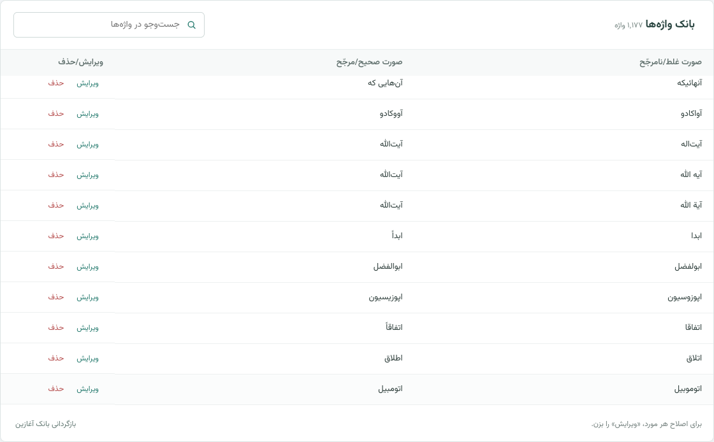
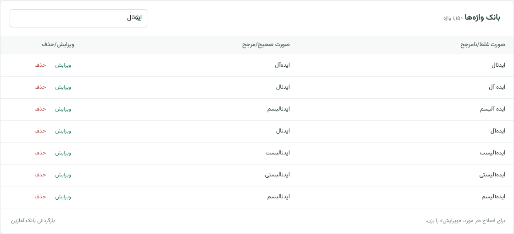
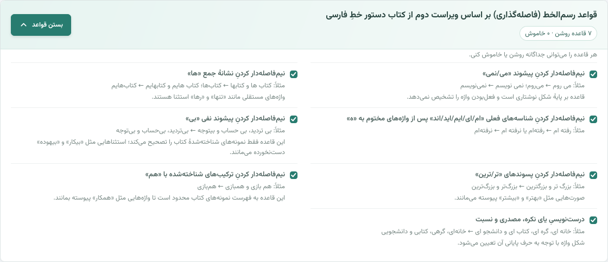

برای نمونه، در صفحهٔ تنظیمات واژهبان، «انظباط» را بهعنوان صورت نادرست و «انضباط» را بهعنوان صورت درست به بانک اضافه کن. بعد، هنگام نوشتن در فایرفاکس، «انظباط» را تایپ کن و کلید فاصله (Space)، نشانهای مثل نقطه یا ویرگول، یا کلید Enter را فشار بده؛ واژهبان همان واژه را در همان فیلد به «انضباط» تبدیل میکند. برای این اصلاح لازم نیست متن را به ابزار دیگری منتقل کنی.

بانک واژهها، به انتخاب خودت
واژهبان با یک بانک آغازین شامل ۱۱۷۷ جفت واژه میآید. بخشی از آن، صورتهای املایی و نامهای خاصی را در بر میگیرد که در ویراست دوم کتاب دستور خطِ فارسی برایشان صورت مرجّح مشخص شده است. مواردی که کتاب چند صورت را میپذیرد یا انتخاب شکل درست به معنا و بافت بستگی دارد، بهعنوان تصحیح قطعی در بانک قرار نگرفتهاند.

بانک آغازین فقط نقطهٔ شروع است. میتوانی واژههای تازه اضافه کنی، موارد قبلی را ویرایش یا حذف کنی و در بانک جستوجو انجام بدهی. اگر خواستی واژهبان را به وضعیت اولیه برگردانی، گزینهٔ بازگردانی بانک آغازین هم در دسترس است.

قواعد رسمالخط
همهٔ صورتهای زبانی را نمیتوان با افزودن چند جفت واژه به بانک پوشش داد. برای همین واژهبان هفت قاعدهٔ جداگانه برای رسمالخط و فاصلهگذاری دارد. این قواعد بهطور پیشفرض روشناند و میتوانی هرکدام را مستقل از بقیه خاموش یا روشن کنی:
- پیشوند «می/نمی»: «می روم» به «میروم» و «نمی نویسم» به «نمینویسم» تبدیل میشود.
- نشانهٔ جمع «ها» و صورتهای ضمیری آن: برای نمونه «کتاب ها»، «کتابها»، «کتاب هایم» و «کتابهایم» به صورتهای نیمفاصلهدار تصحیح میشوند.
- شناسههای فعلی پس از واژههای مختوم به «ه»: «رفته ام» و «نرفته ایم» به «رفتهام» و «نرفتهایم» تبدیل میشوند.
- پیشوند نفی «بی»: صورتهای شناختهشدهای مثل «بی تردید» و «بیتوجه» به «بیتردید» و «بیتوجه» تبدیل میشوند.
- پسوندهای «تر/ترین»: «بزرگ تر» و «بزرگترین» به «بزرگتر» و «بزرگترین» تبدیل میشوند؛ صورتهایی مثل «بهتر» و «بیشتر» پیوسته میمانند.
- ترکیبهای شناختهشده با «هم»: «هم بازی» و «همبازی» به «همبازی» تبدیل میشوند.
- یای نکره، مصدری و نسبت: شکل واژه با توجه به حرف پایانی آن تعیین میشود؛ برای نمونه «خانه ای» به «خانهای» و «دانشجو ای» به «دانشجویی» تبدیل میشود.
برای جلوگیری از تغییرهای نابجا، بعضی قواعد به نمونههای مشخص محدودند. مثلاً قاعدهٔ «هم» فقط ترکیبهای شناختهشده را در بر میگیرد و واژههایی مثل «همکار» را پیوسته نگه میدارد. در برخی عبارتها نیز تشخیص معنای مورد نظر فقط از روی شکل واژه ممکن نیست؛ به همین دلیل روشن و خاموشکردن مستقل هر قاعده به خودت سپرده شده است.

پشتیبانگیری و نگهداری اطلاعات
واژهها و تنظیمات روی دستگاه خودت، در فضای ذخیرهسازی محلی فایرفاکس نگهداری میشوند. متنهایی که مینویسی برای تصحیح به سروری فرستاده نمیشوند. میتوانی بانک واژهها را به شکل JSON پشتیبان بگیری و بعداً دوباره وارد کنی یا آن را با واژههای خودت گسترش بدهی.
رابط تنظیمات فارسی و راستبهچپ است. کارت قواعد رسمالخط هم جمعشونده است: تعداد قواعد روشن و خاموش را در خلاصهاش میبینی و وضعیت باز یا بستهبودنش برای دفعهٔ بعد به خاطر سپرده میشود.